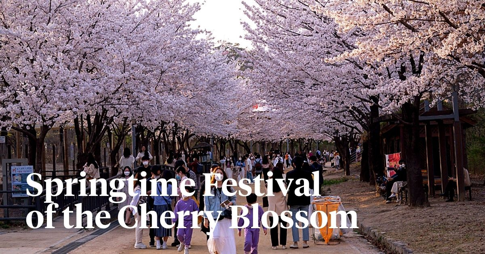
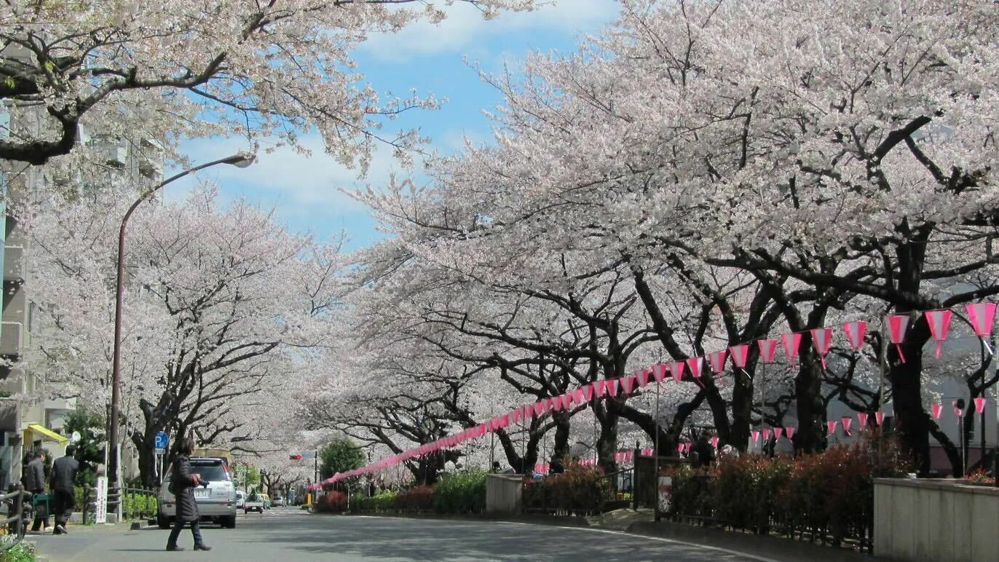
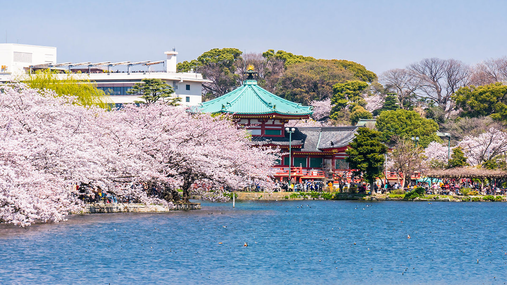
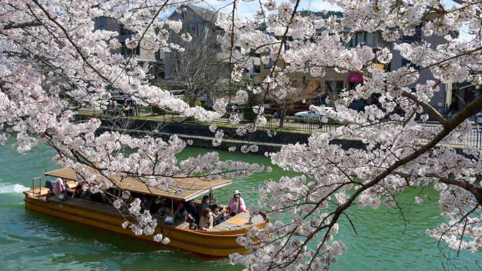

Sakura Festival in Japan: A Celebration of Blossoms and Beauty

The Sakura Festival, or Hanami, is one of Japan’s most cherished traditions. Every spring, delicate pink cherry blossoms transform parks, rivers, and temples into dreamlike landscapes. Experiencing the Sakura season felt like stepping into a living painting—soft petals floating through the air, laughter echoing under blooming trees, and a deep appreciation for nature’s fleeting beauty.
Understanding the Tradition of Hanami
Hanami literally means “flower viewing,” but it’s much more than that. Families, friends, and coworkers gather under cherry trees to celebrate life, renewal, and impermanence. The blossoms bloom for only a short time, reminding everyone to cherish the present moment.
From Tokyo’s Ueno Park to Kyoto’s Philosopher’s Path, people lay out picnic mats, share food, sip sake, and enjoy the calm joy of spring.
Best Places to Experience Sakura

Japan offers countless breathtaking spots to enjoy cherry blossoms. Each location has its own charm, blending history, culture, and natural beauty.



Food, Festivals, and Evening Blossoms
During Sakura season, street food stalls pop up everywhere. I tried sakura mochi, dango, and seasonal bento boxes enjoyed beneath blooming trees. As evening falls, lanterns illuminate the blossoms in a magical event known as “yozakura” (night cherry blossoms).
The soft glow of lights against pink petals created an unforgettable atmosphere—romantic, peaceful, and deeply emotional.
Travel Tip: Check the official cherry blossom forecast before planning. Bloom times vary by region and weather.
Cultural Meaning of Cherry Blossoms
Cherry blossoms symbolize the beauty and fragility of life in Japanese culture. Their brief bloom reflects the idea that life is precious because it is temporary. This philosophy is deeply woven into Japanese art, poetry, and daily life.
When and How to Visit
- Best Time: Late March to early April (varies by region)
- Top Cities: Tokyo, Kyoto, Osaka, Nara
- What to Bring: Picnic mat, camera, light jacket
- Etiquette: Respect nature, clean up after picnics
The Sakura Festival is not just a seasonal event—it’s a soulful experience that connects people with nature, tradition, and each other. Witnessing cherry blossoms in Japan is a memory that lingers long after the petals fall.
Back to Blog